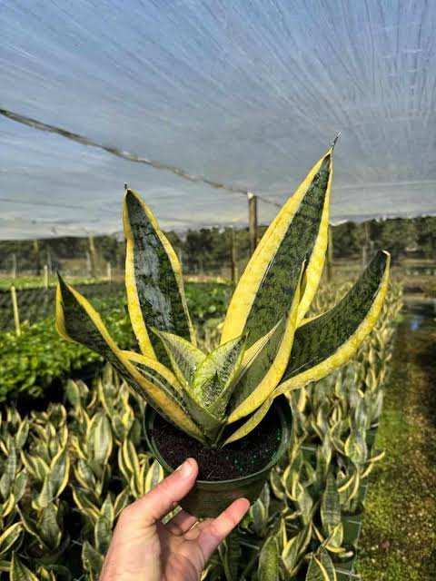
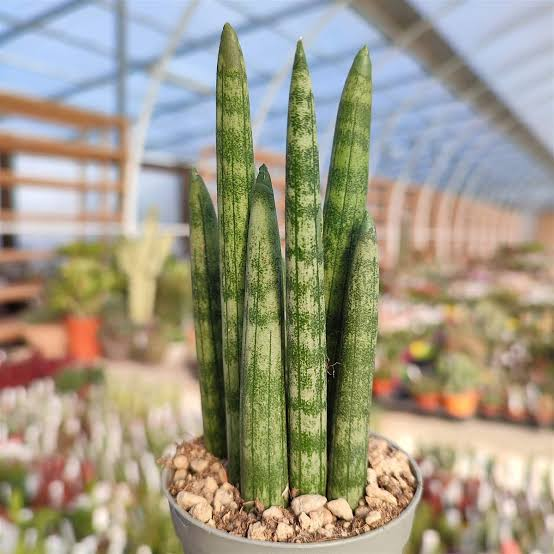
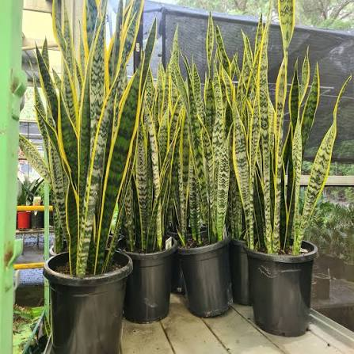
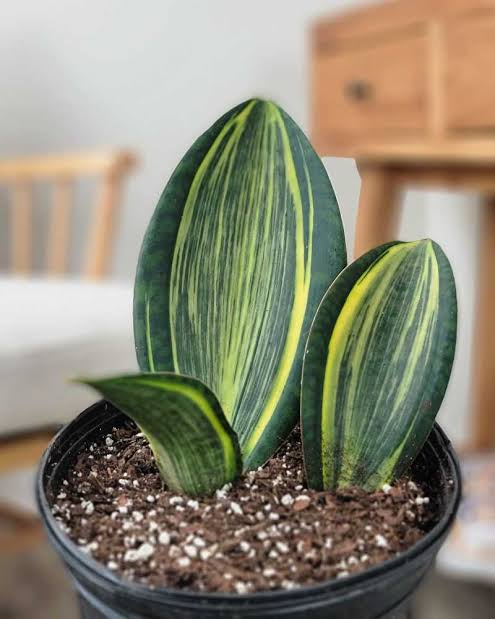

Sansevieria Futura Superba
Ukuran: Sedang ( 20-40 cm) | Cahaya: Tidak langsung / Low light
Dikenal karena daunnya yang tebal bergaris kuning tegas di pinggir, sangat efektif menyaring udara ruangan.
Pilihan tanaman Lidah Mertua berkualitas tinggi untuk mempercantik dekorasi interior maupun eksterior rumah Anda.

Ukuran: Sedang ( 20-40 cm) | Cahaya: Tidak langsung / Low light
Dikenal karena daunnya yang tebal bergaris kuning tegas di pinggir, sangat efektif menyaring udara ruangan.

Ukuran: Kecil-Sedang ( 50-100 cm) | Cahaya: Terang tidak langsung
Memiliki bentuk daun silindris unik menyerupai tombak, memberikan kesan modern dan minimalis.

Ukuran: Besar ( 60-80 cm) | Cahaya: Tahan panas matahari langsung
Sansevieria klasik berukuran tinggi yang kokoh diletakkan di teras atau taman depan rumah.

Ukuran: Besar ( 40-60 cm) | Cahaya: Teduh hingga sedang
Dijuluki sirip paus karena helaian daunnya yang lebar, lebar, dan bertekstur eksotis.